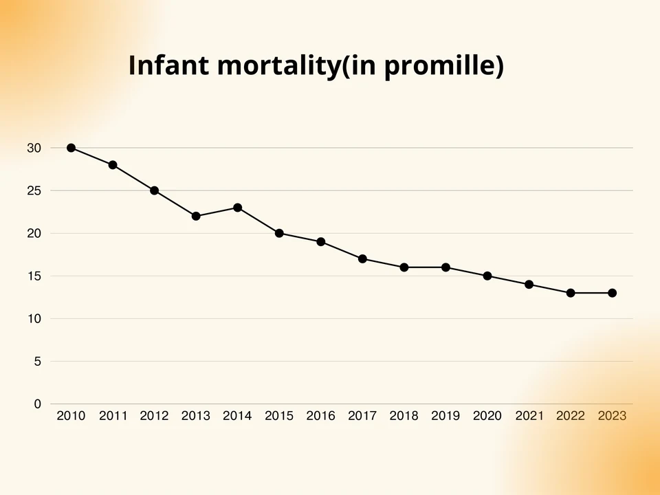

Research
Three questions I’ve tried to answer with data: a team project at summer school, a study of my own program, and a study I lead with advice from a Cornell professor.
In progress · Economics
What protects small businesses when the dollar jumps?

Why I started
Since I was a kid, whenever I asked a seller why something cost more, the answer was the same: “The dollar went up, so we raised the price.” Small businesses produce over half of Uzbekistan’s GDP, and many sell imported goods. On 5 September 2017, the som was floated, and the official rate jumped from 4,210 to 8,100 per dollar overnight.
How it began
I met Prof. Sine at Cornell’s sessions on entrepreneurship and leadership in Tashkent in summer 2026, and he agreed to advise me. I spent about a month writing the introduction. In our first call, he suggested treating the 2017 float as an “environmental jolt” and looking for what protects firms from it.
What I did
- Collected data from six public sources: World Bank Enterprise Surveys (2008–2024), the Statistics Agency’s quarterly survey of small firms (about 223,000 firm-quarters, 2021–2024), business registers, Central Bank exchange rates, World Bank indicators, and CERR’s monthly business climate index.
- Rebuilt CERR’s index myself. CERR couldn’t share firm-level answers, so I compiled the national monthly series from its public releases, April 2020 to September 2026.
- Linked the data into one firm-level file and built a list of 35 key economic events.
- Interviewed 8 business owners in Jizzakh, with their consent: shops, fast food, jewelry, clothing and others.
What I’ve found so far
- A falling som hurts, and a rising som doesn’t. Business mood drops after months when the som falls. In 2025, the som got stronger, and the mood stayed high even with big swings.
- The damage shows up in demand. Sales, jobs and business mood fall slightly, but firms’ finances don’t get worse and closures don’t rise.
- Importers weren’t hurt more by the 2017 float. Firms that import more didn’t grow more slowly afterward.
- Fewer new trade businesses opened in 2017–18, but closures didn’t rise.
- Family ownership, political ties and manager experience didn’t protect firms in the World Bank data.
- The interviews help explain why. Owners set prices in dollars and pass every change to customers. None of the 8 has a dollar loan; they borrow from family.
What’s next
Roy Huang will lead an analysis of the 2017 float with the World Bank firm data, including whether political ties or family ownership softened it. I’ll run more interviews, then write the theory, methods and results, section by section, with my advisors’ approval. The goal is a student journal and conference presentations.
Methods note: an AI assistant (Claude) helped with data collection scripts, analysis, figures and drafting. The paper will say so.
Pilot study · 2026
Did my diplomacy program work?
Paper · 2026
“Changes in Students’ Diplomatic Readiness After a Short Diplomacy Program: A Pilot Study of NextGen Diplomats in Uzbekistan”
The question
What changes in students’ diplomatic readiness (knowledge, reasoning and confidence) can be seen between the start and the end of NextGen Diplomats?
How I tested it
Forty-seven students applied in six days, and 31 came to at least one workshop. Fourteen students in grades 8–11 took the same test before and after the program: 15 knowledge questions, four diplomatic scenarios with written explanations, and ten confidence statements. Because I created and led the program, four teachers marked all 152 written answers without knowing who wrote them or when. A school ethics panel approved the study, and parents received information sheets and consent forms.
What I found
- Knowledge rose from 68% to 89% correct, and no student’s knowledge score went down.
- Confidence rose from 4.05 to 4.65 out of 5. Total scores rose from 55% to 70%: 13 of the 14 students improved, and one stayed the same.
- Written reasoning rose from 5.4 to 7.4 out of 16, but the change wasn’t significant after a stricter check.
- Our first marking, done by people who knew which answers came before and after the program, had made the reasoning gain look 47% bigger.

Limits
There was no control group, and the post-test was taken at home. So these results show how students changed during the program. They can’t prove the program caused the change.
What I learned
Students picked up new ideas quickly. Explaining and defending a decision in writing takes longer. Blind marking made our results smaller, and I trust the smaller numbers more.
Thanks
Four teachers at my school, Leon Damian, Ezra Nicolo P. Antonio, Shakhnoza Urinboyeva and Muzaffar Hasanov, helped me write the paper and marked the answers blind. My math teacher, Sherzod Ergashev, helped with the analysis and graphs.
AI note: an AI assistant (Claude) helped clean the data, prepare the blind-marking files, run the statistical tests, make the figures and draft the text from my notes. I checked every result against the original data, and the paper says this.
Group paper · July 2024
How does urbanization affect child mortality in Uzbekistan?
What we did
We used World Bank data for Uzbekistan from 2010 to 2023 and a multiple regression. Infant mortality was the outcome, and we tested five features of urbanization: access to electricity, internet use, safely managed sanitation, health spending and unemployment.
What we found
Infant mortality fell from 30 to 13 per 1,000 births over the period. Years with more electricity access, more internet users and more people using safely managed sanitation had lower infant mortality. Health spending and unemployment showed no clear link.


Limits
With only 14 yearly data points, the model shows that these indicators moved together over time. It can’t show what caused the drop.
What I took from it
It was my first regression on real data. The model fit almost perfectly (R² of 0.998), and now I know that with so few data points, a near-perfect fit should make you more careful.
See the full project Download the presentation (PDF, 19 slides)
Note: the presentation’s Methodology slide (slide 7) says 2013–2023. Our data and the regression cover 2010–2023 (14 years), as the charts and the results show.